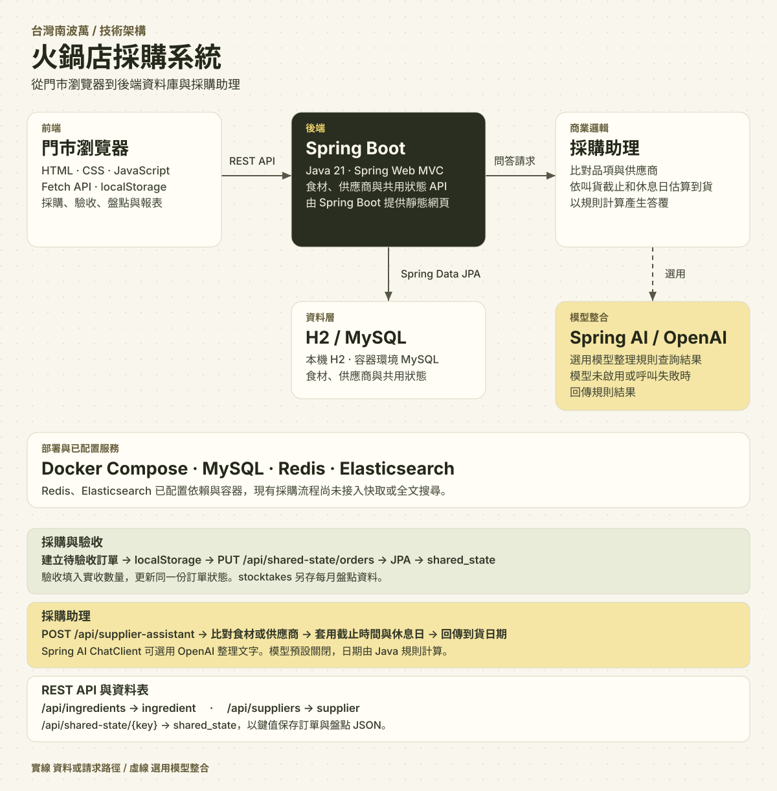

前端
HTML、CSS、JavaScript
呈現採購、驗收、盤點與報表介面，使用 Fetch API 呼叫後端，並以 localStorage 保存門市選擇和展示用登入狀態。
點開架構圖可查看完整尺寸。

前端
呈現採購、驗收、盤點與報表介面，使用 Fetch API 呼叫後端，並以 localStorage 保存門市選擇和展示用登入狀態。
API 與商業邏輯
Spring Web MVC 提供食材、供應商、共用狀態與採購助理的 REST API。
持久化
管理食材、供應商與共用狀態。本機預設使用 H2 檔案資料庫，Docker Compose 環境使用 MySQL 8.4。
選用的模型整合
開啟模型後，採購助理可請模型整理後端算出的結果。未啟用或呼叫失敗時，直接回傳規則結果。
建置與部署
Maven 管理 Java 依賴和建置，Dockerfile 建立應用程式映像，Docker Compose 配置應用程式和配套服務。
已配置依賴與容器
已列入 Maven 和 Docker Compose 設定。目前的採購流程尚未接入 Redis 快取或 Elasticsearch 全文搜尋。
GET /api/ingredients 取清單，POST /api/ingredients 新增。個別食材使用 GET / PUT / DELETE /api/ingredients/{id}。
ingredient 保存品名、分類、供應商、單價、數量及時間。
GET /api/suppliers 回傳供應商及叫貨規則。
supplier 保存唯一廠商名稱、每週休息日及叫貨截止時間。助理依食材所記的供應商名稱查詢規則。
GET / PUT /api/shared-state/{key} 讀取或保存整份 JSON。
shared_state 以 stateKey 為主鍵。orders 保存訂單與驗收，stocktakes 保存各月盤點。
POST /api/supplier-assistant 接收問題，回傳答覆與 generatedByAi 標記。
查詢使用食材與供應商資料，交由 SupplierScheduleService 計算日期。
shared_state。gpt-4.1-mini 且可配置。Maven 與 Dockerfile 負責建置。Spring Boot 同時承載網頁和 API。本機使用檔案型 H2，Compose 透過環境變數切換為 MySQL，並配置 Redis 與 Elasticsearch。
展示用員工登入由前端判斷，登入狀態存於瀏覽器，期限為 10 分鐘。下單人資訊隨訂單一起保存。